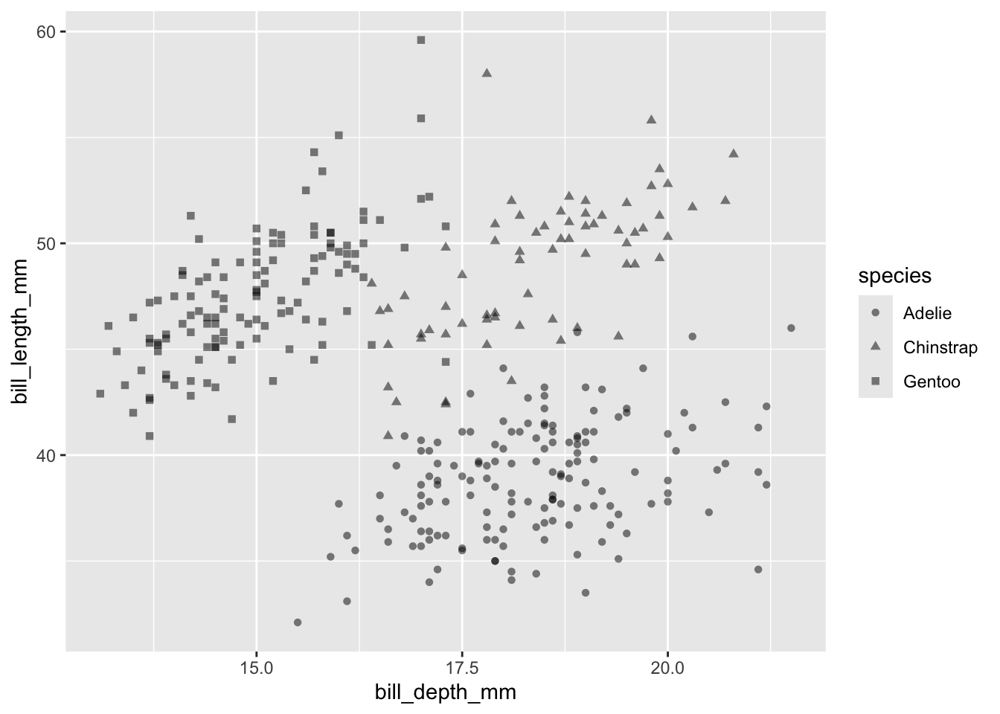

install.packages("palmerpenguins")Demo 02: Scatterplots and Linear Regression
Scatterplots with Penguins
The graphs below don’t have proper titles, axis labels, legends, etc. Please take care to do this on your own graphs. Throughout this demo we will use the palmerpenguins dataset. To access the data, you will need to install the palmerpenguins package:
Geometric layer
We use geom_point() to generate scatterplots (requires x and y aes)
library(tidyverse)
library(palmerpenguins)
data(penguins)
penguins |>
ggplot(aes(x = bill_depth_mm, y = bill_length_mm)) +
geom_point()
Always adjust transparency!
Scatterplots display the joint distribution of the variables along the x and y axes. You should always adjust the transparency of points via alpha to visualize overlap - providing a better understanding of joint frequency. This is especially important with larger datasets.
penguins |>
ggplot(aes(x = bill_depth_mm, y = bill_length_mm)) +
geom_point(alpha = 0.5)Warning: Removed 2 rows containing missing values or values outside the scale range
(`geom_point()`).Mapping Aesthetics
Colors
We can color by a third variable (e.g., different color for each category).
Note that, just like the x and y aesthetics, you can put color = inside ggplot or geom_point - both display the same visualization:
penguins |>
ggplot(aes(x = bill_depth_mm, y = bill_length_mm, color = species)) +
geom_point(alpha = 0.5)Warning: Removed 2 rows containing missing values or values outside the scale range
(`geom_point()`).penguins |>
ggplot(aes(x = bill_depth_mm, y = bill_length_mm)) +
geom_point(alpha = 0.5, aes(color = species))Warning: Removed 2 rows containing missing values or values outside the scale range
(`geom_point()`).
You can also color by a quantitative variable using a color scale/gradient:
penguins |>
ggplot(aes(x = bill_depth_mm, y = bill_length_mm)) +
geom_point(alpha = 0.5, aes(color = body_mass_g))Warning: Removed 2 rows containing missing values or values outside the scale range
(`geom_point()`).The default color gradient is not the most appealing, while there are a number of possibilities - blue to orange is a good choice since these colors are opposites on the color spectrum:
penguins |>
ggplot(aes(x = bill_depth_mm, y = bill_length_mm)) +
geom_point(alpha = 0.5, aes(color = body_mass_g)) +
scale_color_gradient(low = "darkblue", high = "darkorange")Warning: Removed 2 rows containing missing values or values outside the scale range
(`geom_point()`).Point size (size)
We can also map variables to other aesthetics, e.g. size:
penguins |>
ggplot(aes(x = bill_depth_mm, y = bill_length_mm)) +
geom_point(alpha = 0.5, aes(size = body_mass_g))Warning: Removed 2 rows containing missing values or values outside the scale range
(`geom_point()`).Point type (shape)
Or the type (shape) of points:
penguins |>
ggplot(aes(x = bill_depth_mm, y = bill_length_mm)) +
geom_point(alpha = 0.5, aes(shape = species))Warning: Removed 2 rows containing missing values or values outside the scale range
(`geom_point()`).
Combining aesthetics
We can even do several of these at once:
penguins |>
ggplot(aes(x = bill_depth_mm, y = bill_length_mm,
color = species, shape = island,
size = body_mass_g)) +
geom_point(alpha = 0.5)Warning: Removed 2 rows containing missing values or values outside the scale range
(`geom_point()`).The above graph may be a bit difficult to read, but it contains a lot of information in the sense that it is a 5-dimensional graphic:
x= bill depth (mm)y= bill length (mm)color= speciessize= body mass (g)shape= island
But be careful!
The more complications you add, the more difficult your graph is to explain.

Trend Lines
We can do different forms of statistical modeling within our plots (e.g., with geom_smooth()).
For example, we can add a linear regression line to our plot very easily. For this example, we’ll switch to looking at body_mass_g against flipper_length_mm.
Linear regression
To do this, we can use + geom_smooth(method = lm):
penguins |>
ggplot(aes(x = flipper_length_mm, y = body_mass_g)) +
geom_point(alpha = 0.5) +
geom_smooth(method = "lm", se = FALSE)`geom_smooth()` using formula = 'y ~ x'Warning: Removed 2 rows containing non-finite outside the scale range
(`stat_smooth()`).Warning: Removed 2 rows containing missing values or values outside the scale range
(`geom_point()`).##Linear regression (with error bars)
Above, I added se = FALSE so that the standard error bars do not show up in the graph. Setting this parameter to TRUE produces (by default) 95% confidence intervals.
penguins |>
ggplot(aes(x = flipper_length_mm, y = body_mass_g)) +
geom_point(alpha = 0.5) +
geom_smooth(method = "lm", se = TRUE)`geom_smooth()` using formula = 'y ~ x'Warning: Removed 2 rows containing non-finite outside the scale range
(`stat_smooth()`).Warning: Removed 2 rows containing missing values or values outside the scale range
(`geom_point()`).You can change the level of the confidence intervals using the level argument:
penguins |>
ggplot(aes(x = flipper_length_mm, y = body_mass_g)) +
geom_point(alpha = 0.5) +
geom_smooth(method = "lm", se = TRUE, level = 0.99)`geom_smooth()` using formula = 'y ~ x'Warning: Removed 2 rows containing non-finite outside the scale range
(`stat_smooth()`).Warning: Removed 2 rows containing missing values or values outside the scale range
(`geom_point()`).However, from these graphs, it’s not clear if the linear regression is a good fit. We can “eyeball” this by looking at the fitted versus residuals, or we can make a residual-versus-fit plot.
What’s a residual-versus-fit plot? In short, the “fits” are the estimated y-values from the linear regression (i.e., the y-values along the linear regression line). Meanwhile, the “residuals” are the distance between the actual y-values and the fits. A residual-versus-fit plot is itself a scatterplot, with fits on the x-axis and residuals on the y-axis.
lin_reg <- lm(body_mass_g ~ flipper_length_mm, data = penguins)
fitted_vals <- fitted(lin_reg)
res_vals <- residuals(lin_reg)
tibble(fits = fitted_vals,
residuals = res_vals) |>
ggplot(aes(x = fits, y = residuals)) +
geom_point() +
geom_hline(yintercept = 0, linetype = "dashed", color = "red")We look for two things when looking at residual-versus-fit plots:
- Is there any trend around the 0 horizontal line? If so, that might be a violation of the linearity assumption (more on this next class).
- Do the points have equal vertical spread from left to right? If not, that might be a violation of the equal variance assumption.
We’ll talk about these assumptions more next class.
Variable Transformations
Transformations of the outcome
We can transform variables as well – again, within the plot. First, we will focus on the outcome y; in particular, we will focus on log transformations. This can be done through the y argument…
penguins |>
ggplot(aes(x = flipper_length_mm, y = log(body_mass_g))) +
geom_point(alpha = 0.5) +
geom_smooth(method = "lm", se = TRUE)`geom_smooth()` using formula = 'y ~ x'Warning: Removed 2 rows containing non-finite outside the scale range
(`stat_smooth()`).Warning: Removed 2 rows containing missing values or values outside the scale range
(`geom_point()`).Transformations of Covariates
It’s also possible to include transformations of the covariates instead of (or in addition to) transformations of the outcome. For example, the following plots a quadratic regression model (i.e., plots y ~ x + x^2).
Note that the formula argument in geom_smooth requires you to write in terms of y and x, NOT the variable names!
penguins |>
ggplot(aes(x = flipper_length_mm, y = body_mass_g)) +
geom_point(alpha = 0.5) +
geom_smooth(method = "lm",
formula = y ~ x + I(x^2))Warning: Removed 2 rows containing non-finite outside the scale range
(`stat_smooth()`).Warning: Removed 2 rows containing missing values or values outside the scale range
(`geom_point()`).To assess if this is a better fit, we can again make a fitted-versus-residual plot (this looks better!):
quad_lin_reg <- lm(body_mass_g ~ flipper_length_mm + I(flipper_length_mm^2),
data = penguins)
quad_fitted_vals <- fitted(quad_lin_reg)
quad_res_vals <- residuals(quad_lin_reg)
tibble(fits = quad_fitted_vals,
residuals = quad_res_vals) |>
ggplot(aes(x = fits, y = residuals)) +
geom_point() +
geom_hline(yintercept = 0, linetype = "dashed", color = "red")Non-Linear Trends
We can also do other types of modeling, e.g. local regression / loess smoothing:
penguins |>
ggplot(aes(x = flipper_length_mm, y = body_mass_g)) +
geom_point(alpha = 0.5) +
geom_smooth(method = "loess")`geom_smooth()` using formula = 'y ~ x'Warning: Removed 2 rows containing non-finite outside the scale range
(`stat_smooth()`).Warning: Removed 2 rows containing missing values or values outside the scale range
(`geom_point()`).
Check the help documentation for geom_smooth() and stat_smooth() to see what methods are available and how to use them. The most common choices are “lm”, “glm”, “gam”, and “loess”.
Note that if you don’t put anything in geom_smooth, it will select “auto”, which typically uses loess for small datasets and gam for large datasets. However, it uses a particular form of smoothing splines, so in practice I recommend you specify a particular statistical method (e.g., “lm”, “loess”) so you actually know what you’re plotting.
Useful for residual diagnostics
Convenient to add + geom_smooth() to residual plots to help display any trends:
tibble(fits = fitted_vals,
residuals = res_vals) |>
ggplot(aes(x = fits, y = residuals)) +
geom_point() +
geom_hline(yintercept = 0, linetype = "dashed", color = "red") +
geom_smooth(method = "loess")`geom_smooth()` using formula = 'y ~ x'which appears to be alleviated with the quadratic transformation:
tibble(fits = quad_fitted_vals,
residuals = quad_res_vals) |>
ggplot(aes(x = fits, y = residuals)) +
geom_point() +
geom_hline(yintercept = 0, linetype = "dashed", color = "red") +
geom_smooth(method = "loess")`geom_smooth()` using formula = 'y ~ x'
Leave The Points, take The Regression Model? (This is a bad idea…)
We don’t even need to plot the points to do this – you can plot the regression model by itself by simply omitting geom_point():
penguins |>
ggplot(aes(x = flipper_length_mm, y = body_mass_g)) +
geom_smooth(method = "loess")`geom_smooth()` using formula = 'y ~ x'Warning: Removed 2 rows containing non-finite outside the scale range
(`stat_smooth()`).As always, you can adjust some parameters (like color, alpha, etc.):
penguins |>
ggplot(aes(x = flipper_length_mm, y = body_mass_g)) +
geom_smooth(method = "loess", se = TRUE, fill = "darkorange",
color = "darkblue", size = 2, alpha = 0.2) +
theme_bw()Warning: Using `size` aesthetic for lines was deprecated in ggplot2 3.4.0.
ℹ Please use `linewidth` instead.`geom_smooth()` using formula = 'y ~ x'Warning: Removed 2 rows containing non-finite outside the scale range
(`stat_smooth()`).However, in general I don’t recommend doing this, because it hides the data entirely, making it unclear which data points are influencing the regression line.